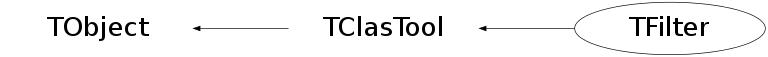

class TFilter: public TClasTool
TFilter
This Class is the base class for writing data filters. I highly recommend that you use it by
Another good practice that I strongly encourage is that you keep a list of counters (TCounterCol) and a list of histograms that show all your cuts and percentage passed and stick these results right in the output file. This can save you a headache later trying to figure out what was in the files.
Notice: This class only works with data read by the TDSTReader (i.e. written by Write_Root_DST).
Function Members (Methods)
public:
protected:
| virtual void | TObject::DoError(int level, const char* location, const char* fmt, va_list va) const |
| void | TObject::MakeZombie() |
| TVERTClass* | TClasTool::Vert_Error_Handler(Int_t NRows, Int_t track1, Int_t track2) |
Data Members
public:
| enum TObject::EStatusBits { | kCanDelete | |
| kMustCleanup | ||
| kObjInCanvas | ||
| kIsReferenced | ||
| kHasUUID | ||
| kCannotPick | ||
| kNoContextMenu | ||
| kInvalidObject | ||
| }; | ||
| enum TObject::[unnamed] { | kIsOnHeap | |
| kNotDeleted | ||
| kZombie | ||
| kBitMask | ||
| kSingleKey | ||
| kOverwrite | ||
| kWriteDelete | ||
| }; |
public:
| Int_t | C_Good_Event_Out | Example for a counter index. |
| TCounterCol | Cuts | Collections of counters for all your cuts. |
| TObjArray* | H | Array that stores your histograms. |
| TH1F* | H_PID | Pointer to the one histogram defined here. |
| TInterrupt* | Interrupt | |
| TStopwatch* | Time | |
| TChain* | chain | Pointer to input tree. |
| Int_t | TClasTool::fDebug_Mode | Sets the verbosity of the code. |
| TVirtualReader* | TClasTool::fReader | This is a pointer to the actual reader used. |
| Int_t | gFix_EC_Bank | |
| Int_t | iEvent | Event being processed |
| TTree* | tree | Pointer to the output tree. |
protected:
| Float_t | TClasTool::fEBeam | Beam energy. Set with SetBeamEnergy(). |
| Int_t | TClasTool::isReaderDefined | True is reader is initialized. |
Class Charts
{kind=link}
{kind=link}
{kind=link}
{kind=link}

Function documentation
void InitHistos(void)
This functions needs an override where you define your own histograms and counters. You want to have the overridden InitHistos() routine called from the deriving class initializer. NOTE: Your InitHistos method must at least define the C_Good_Event_Out counter.
Int_t SelectEvent()
This function must be overridden to provide your own cut. This function returns 0 when you want to skip the event and 1 when you want to keep it.
TTree * Create_Out_Tree(TDSTReader* dstread)
In a more simple world we would just be able to clone the input tree to the output tree, using TTree *tree=chain->CloneTree(). This broke when there was a data change (from UChar_t to Char_t) in the TVirtualData class. Instead of cloning the input tree, we build a new tree, similar to the one in TDSTReader
~TFilter()